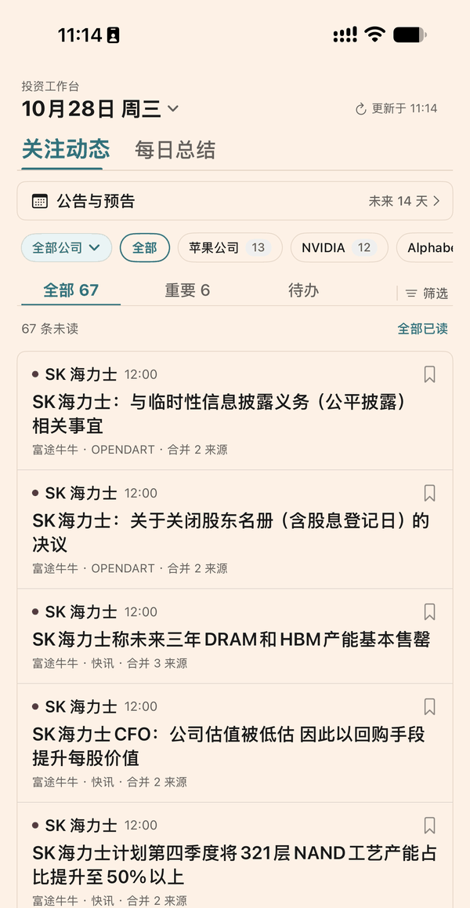
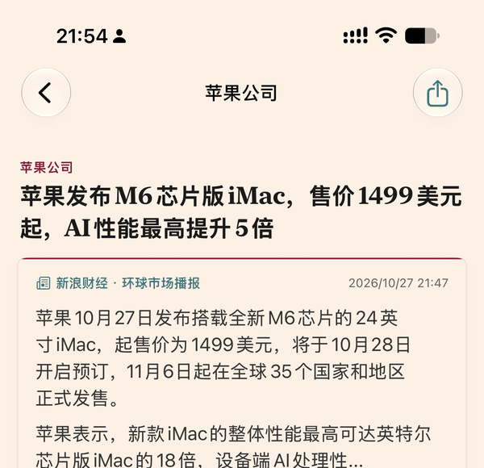

产品展示
「快即是慢」把研究和复盘需要用到的几个环节收进一个应用。下面按页面逐一说明每个功能做什么、解决什么问题。
一、首页：关注的公司动态
打开应用后首先看到的是当天的公司动态。这是整个应用使用频率最高的页面，设计目标是 用最少的操作看完最重要的信息。

| 界面元素 | 作用 |
|---|---|
| 顶部日期条 | 显示当前查看的日期与最近更新时间，下拉即可刷新 |
| 公司筛选 | 按关注的公司快速切换，只看这一家的动态；标签右侧数字为该公司的未读数 |
| 状态分类 | 全部 / 重要 / 待办，三个入口对应三种阅读目的 |
| 列表条目 | 显示公司、标题、来源与时间；同一事件的多篇报道合并成一条并标注合并数量 |
| 书签图标 | 把该条加入待办，稍后集中处理 |
这个页面解决什么问题
同一件事往往被多家媒体报道，逐一阅读既费时间又容易读到重复内容。应用把指向同一事件的报道 归并到一起，你只需要读一次，需要交叉核对时再展开看其余来源。
二、动态详情
点击任意条目进入详情页，这里展示这条动态的完整信息。

| 界面元素 | 作用 |
|---|---|
| 标题区 | 公司名与新闻标题，标题字号最大，便于一眼定位 |
| 来源眉标 | 来源媒体与发布时间 |
| 分段摘要 | 把较长内容按语义分段呈现，便于快速抓重点 |
| 「查看详情」按钮 | 在应用内打开原始页面，看完整报道 |
| 「待办」按钮 | 加入待办列表，稍后回看 |
| 右上角分享入口 | 把这条动态整理成一张图片分享出去 |
| 判定依据 / 合并来源 | 说明该条为什么被判为重要，以及合并了哪几篇报道 |
关于图片分享
点分享后，应用会把这条动态的内容整理成一张图片，交给系统分享面板，你可以发给朋友或存到相册。 图片里只包含公司名、标题、来源、摘要与免责说明，不包含任何账户信息、持仓金额或内部数据地址。
三、研究资料
研究页按公司组织资料。每家公司的资料按栏目分类，可以像读文档一样逐节阅读，也可以在应用内打开原始出处。
- 公司分类：左侧或顶部选择公司，右侧显示该公司的资料栏目
- 分节阅读：生意模式、经营数据、估值方法等内容分节呈现
- 原文跳转：需要核对时可直接打开原始文档
四、持仓记录
持仓页用于记录与回顾自己的持仓情况，按账户与公司整理，以只读方式展示，方便定期复盘。
- 组合概览：按账户与公司汇总持仓
- 只读展示：应用不提供买入、卖出、下单等任何交易操作
- 数据归属：持仓数据来自用户自己的数据源，应用不做上传与分享
五、每日动态摘要
一天结束时，可以翻看当天的动态汇总，按公司归类，快速确认有没有漏掉的重要变化。 支持开启提醒，在固定时段收到通知。
六、典型使用流程
- 早上看一眼首页当天关注的公司有什么新动态，重要的先读。
- 遇到感兴趣的进详情读分段摘要，需要时点「查看详情」看原文。
- 值得再读的加待办不打断当前阅读，稍后集中处理。
- 晚上翻每日摘要确认当天的重要变化，补看白天漏掉的条目。
- 定期回顾持仓结合研究资料与持仓记录，形成自己的判断。
七、能力边界
为了避免误解，这里明确列出本应用不做的事情：
| 不做的事情 | 说明 |
|---|---|
| 不提供证券交易 | 没有买入、卖出、下单、撤单等任何交易功能 |
| 不代客理财 | 不涉及资金托管、资产管理或任何形式的受托服务 |
| 不提供投资建议 | 不输出买卖建议、目标价、荐股名单等内容 |
| 不接入券商通道 | 不连接任何券商交易接口 |
| 不提供注册登录 | 应用无需注册账号即可使用 |
| 不做广告与追踪 | 不投放广告，不做跨应用追踪，不收集广告标识符 |
说明：应用当前处于 TestFlight 内部测试阶段，功能仍在调整中，实际界面与交互可能与本页描述略有差异。本页用于说明产品定位与功能范围，不构成任何承诺或投资建议。